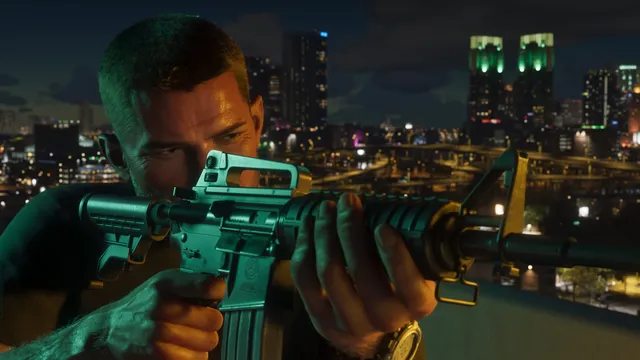
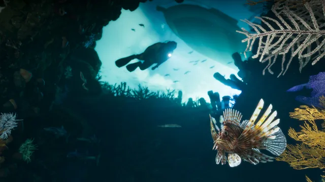
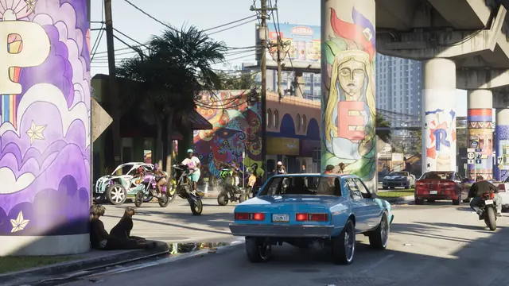
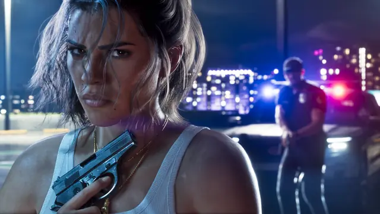
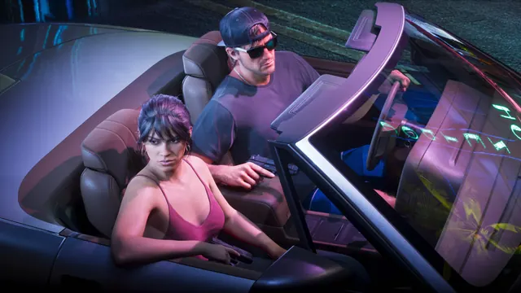
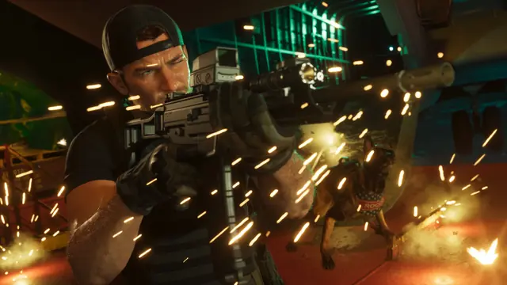
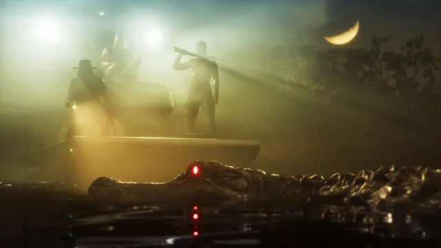
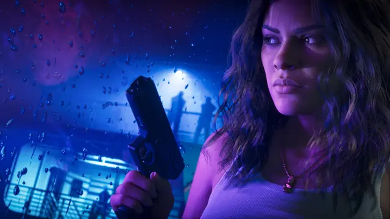
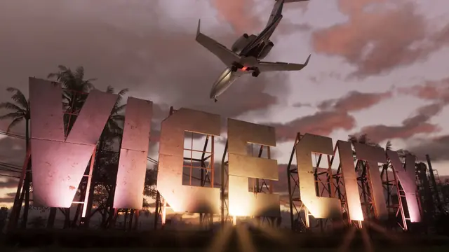

27 November 2026 · Controls
GTA 6 first person mode: every official first-person view
Inspect Surroundings, phone driving view, scopes, binoculars and the camera settings worth changing.
Beginner FAQs · Updated 27 November 2026
A practical launch-day checklist for Grand Theft Auto VI: how much storage you need, which edition to buy, what is (and is not) on PC, and the first-hour habits that keep you from going broke.
Background: Rockstar Games (official screenshot)
| Standard ($79.99) | Ultimate ($99.99) | |
|---|---|---|
| The game | Yes | Yes |
| Story-threaded vehicles, weapons, apparel, exclusive shops | No (upgrade sold separately) | Yes, unlocked across chapters |
| Vintage Vice City Pack (before 20 Nov 2026) | Yes, if bought in time; now a paid add-on | Yes, if bought in time; now a paid add-on |
| One month of GTA+ (digital, in the pack window) | Yes, if eligible | Yes, if eligible |
| Physical box | Download code only | No physical Ultimate; upgrade digitally |
Upgrade any time: the Ultimate Edition Upgrade is $20 / £20 / €20, the same as the price gap, so you can start with Standard and decide later. Every bonus, its unlock chapter and the upgrade steps are in our GTA 6 Standard vs Ultimate Edition guide. Full official vehicle names are on the vehicles page. GTA+ time included with digital purchases applies to the existing GTA Online / GTA+ Games Library, not a GTA 6 multiplayer mode.
PlayStation lists the game as 1 player with offline play enabled, and its official FAQ says “Grand Theft Auto VI is a single-player experience.” Take-Two’s pre-order announcement called out a single-player experience. As of 22 November 2026, Rockstar has not announced GTA 6 Online or any multiplayer date; the only “2027” timeframe comes from Twitch CEO Dan Clancy and is unconfirmed (full breakdown: GTA 6 Online release date). There is also no PC release (see our GTA 6 PC release date guide). Existing GTA Online in Grand Theft Auto V is a different service, and Take-Two said on 9 November 2026 that Rockstar will keep supporting it with new content and events.
These tips are launch-day reports (especially Polygon’s “what to do first” guide), not official manual text:
When you are ready to earn, open the GTA 6 money guide and start with the chapter you are actually in: Moses car sales in Chapter 2, jewelry stores in Chapter 3 and bank vaults at the end of Chapter 4.
The PlayStation listing highlights 30 accessibility features, including remappable controls, subtitles and captions, stick options, adjustable difficulty, simplified QTEs, control and tutorial reminders, and a basic game-speed assist. DualSense vibration and trigger effects are supported. Explore Settings before you start a long session; pick the control scheme that matches how you played earlier GTA games if a “Classic” option is offered in your build.
GTA 6 has no full first-person mode at launch, but you can see through Jason’s and Lucia’s eyes four ways: Inspect Surroundings (stand still, no weapon out, hold L2 + R3 on PS5 or LT + RS on Xbox), the phone with Settings → Camera → Phone Display set to First Person (it works while driving), scopes and sights, and binoculars. In a car, hold Down on the D-pad to switch between three camera heights and the cinematic camera. Buttons, settings and what Rockstar said: GTA 6 first person mode.
On Rockstar’s site: Trailer 1 (4 December 2023), Trailer 2 (6 May 2025), An Extended Look (27 August 2026), and the Launch Trailer (15 October 2026). The official album is at gtavi-thealbum.com.
GTA 6 has 22 music stations (two are unlockable playlists), two talk stations and five on-demand podcasts, per Rockstar’s official credits, and you can listen on foot with in-game headphones. Our GTA 6 radio stations guide lists every station and host and shows where to scan the posters that unlock The Vault Radio and The Sniper of La Perle.
Save from the pause menu: Game → Save Game, then pick one of 15 slots. It works anywhere in free roam, but not during the prologue, a mission, combat or with a wanted level. Autosave mostly fires when a mission ends and keeps only one slot, so make a manual save before you quit. Steps, the greyed-out fixes and a slot plan: how to save in GTA 6.
Plan for 60 to 80 hours for the story at a normal pace. Published reviewer runs range from 42 hours (rushed) to 115 hours (doing everything), and the in-game 100% checklist takes about 200 hours. There are 91 main missions across five chapters and no mission replay, so keep manual saves. Every published time and a step-by-step plan: how long is GTA 6?
Rockstar’s first post-launch update arrived on 23 November 2026: 01.002.002 on PS5 (603.8 MB) and 1.0.2.2 on Xbox (about 1.6 GB). The official notes list 7 fixes: crashes, weather stuck for long periods, autosave not working correctly, story and mission phone calls not arriving, wanted levels you could not lose, the gym deadlift bar, and partners not handing over bags for fences. It rolls out in stages and adds no new content. Full notes, what to do after updating and the bugs still reported: GTA 6 patch notes.
GTA 6 has up to 6 stars, and their colour shows what police know: hollow means the suspect is unknown, solid white means active pursuit, gray means they lost sight of you, red means heat remains in the area. Icons under the stars show how they will recognise you (face, outfit, car, visible gun, partner, CCTV). Police are not on the minimap, so use Focus to spot them. Break line of sight, leave the search area, clear the icons and avoid the red zone. Every star and icon explained: GTA 6 wanted level guide.
The bond has four levels: Running on Empty, Partners in Crime, Crazy in Love and Hot Together. Hold right on the D-pad to see the heart icon. It rises when you do things together (greet, hold hands, buy food, rob places as a pair, go home at night, answer texts) and falls if you ignore your partner or only play one character, so switch often. It is one of four factors behind the ending, with both Criminal Profiles and Family Savings (Rob Nelson via Polygon). Full routine: GTA 6 relationship status explained.
Jason and Lucia each have a Criminal Profile: Professional (yellow), Hardened (orange), Violent (purple), Psycho (light gray) and Irredeemable (dark gray). Hold right on the D-pad to see it. Wound enemies on the yellow weak spots in Focus, leave civilians and pets alone and rob clean to stay Professional; mission-required crimes do not count. At Psycho you can no longer surrender, and Irredeemable is permanent, so save to a new slot if the Psycho icon cracks. It also feeds into the ending. Every level, Focus bonus and the way back: GTA 6 Criminal Profile explained.
You cannot sell cars in Chapter 1. Scan first with WAiNK (hold Up on the D-pad, then R1/RB) to see the tracker and sell value. No tracker: Moses in Port Gellhorn from Chapter 2. Standard Tracker: any Pay ’n’ Spray from early Chapter 3, reportedly three stolen cars per in-game day. Wish List supercars: Randy in western Vice City. Advanced Tracker: Pay ’n’ Spray only after Randy’s ’64 Mamba GT job in Chapter 4. Sell your own garaged cars from the Stored Vehicles tab (R1/RB) at any Pay ’n’ Spray. Full walkthrough: how to sell cars in GTA 6.
Randy’s Wish List opens in Chapter 3 after Clonin’ Keys, Makin’ Gs, which also gives you the Key Cloner. Track it under Map > Robberies > Randy’s Wish List. Randy accepts a listed model from anywhere, so skip his one-at-a-time leads. The Bayside car dealership west of Dynamix Fitness alone has five list cars (Windsor Drop, Paragon, Jubilee, Itali RSX and Dubsta), and PowerPyx lists base rewards of $3,150–$20,200 per car. Repair at the gas station north of his Balsero showroom before you deliver, for the condition bonus. Every spot, the Thrax job and the Delivery Day reward: GTA 6 Randy’s Wish List guide.
Jewelry store robberies open in Chapter 3 after Yasmani’s Jewelry Jobs. There are 20 stores (15 in Vice-Dale, 3 in Leonard, 2 in Mariana), and the best map cards show a $14,000–$25,000 take (PowerPyx). Go in the back with the Snap Gun, disarm the panel, destroy the footage, open the back-room safe (or the store won’t count), smash the cases last and sell to Yasmani in Little Cuba. Only the mission safes have fixed codes: 6815, 0104 and 1680. Every store and a route: GTA 6 jewelry store locations.
Diving opens with the Chapter 1 mission Island Dreams at Kenton’s shop in Key Lento. Grab scuba gear from the stern of his yellow boat, dive in the middle of a purple circle, and turn with the metal detector until it flashes green. Green but no Treasure prompt means a buried chest: pull it out with L2 + R2 / LT + RT. There are six shipwrecks off Key Lento plus Belpoint Strait and the Bobcat Dive Site, 41 relics in 7 sets, and Kenton pays about $200 a piece (KeenGamer, PowerPyx). Nothing is missable, but bank Chapter 1 cash before Tourist Trap. Every site and relic: GTA 6 treasure locations.
Get Busted or Wasted in a registered car, or leave it in the police search area, and it is towed to the nearest impound lot. Find it on the map under Personal > Impounded Vehicles. Free option: climb the fence or break open the gate and drive it out, then lose the 1–2 star wanted level and respray it. Paid option (after Chapter 2’s Moses): the Scooter Bros app, $100 base rate plus a retrieval charge (reported $550–$699). Do crimes in stolen cars so your own never get towed. Full guide with all five known lots: GTA 6 impound lot.
BuckMe Family Savings is a shared, one-way account: money you move in with Buck Yourself (phone > BuckMe) can never be withdrawn, but it is never lost. Fill the $5,000 Chapter 1 goal before Tourist Trap, keep $15,000 in checking for Prepare for Vice City in Chapter 2, and hit $100,000 before buying garages for 20% off (PowerPyx, Game Rant). Your checking limit rises with the story to a $2,000,000 maximum at the start of Chapter 4. Every goal and perk: GTA 6 Family Savings explained.
Story and gang-hideout safes use fixed codes: Kingpin Bowling 0300, Brooks Boatworks 6823 and La Cascara Motel 6969 (all on one wall map at Brooks Boatworks), plus 0420 and 7700 in the Chapter 1 mission Lab Fees. Store, pawn shop and bank safes are usually random: find the safe first, then aim at staff and pick Threaten until “Safe Code?” appears, or use Focus (L3 + R3) to spot a note. No code? A sticky bomb opens any keypad safe. Every known code: GTA 6 safe codes.
Bigfoot is real in GTA 6. Launch guides place him eating a deer by the dirt road on the south-east side of Cottonmouth Lake, south of Hamlet, from early Chapter 1. To start Kirk’s three Strangers & Freaks missions, read the Skunk Ape flyer just inside the Rusty Anchor in Key Lento (or in Skeeter’s bar, Hamlet), call Kirk and meet him at night. Bring a flashlight and use Focus. The questline never expires, counts for 100%, and one ending pays $10,000. Full walkthrough: GTA 6 Bigfoot location and Skunk Ape missions.
Scan cars with the WAiNK app (hold Up on the D-pad, then R1/RB) to see their Speed rating and which buyer wants them. The fastest car found so far is the Truffade Thrax (8.7), the final car on Randy’s Wish List; the fastest one you can simply steal is the Pegassi Vitello (8.2). Full ranking and locations: fastest cars in GTA 6.

Inspect Surroundings, phone driving view, scopes, binoculars and the camera settings worth changing.

Six shipwrecks and two dive sites, every relic, the metal detector and Kenton’s payouts.

All five known lots, the free steal-back route, Scooter Bros fees and Premium credits.

All six BuckMe goals, checking limits, how much to save per chapter and the ending link.

Every store with its take value, the unlock, a ten-store route, fixed safe codes and where to sell.

Fixed spots and payouts for every car, the five-car dealership route, the Thrax and Delivery Day.

How to check it, what moves it, Focus bonuses, Irredeemable and how to get back to Professional.

All 4 levels, what raises or lowers the bond, the Chapter 1 head start and how it affects the ending.

Kingpin Bowling, Brooks Boatworks, La Cascara, Lab Fees and every gang hideout code, plus how to get random codes from staff.

Every buyer by chapter and tracker, step-by-step selling, the daily limit, stored cars and the Advanced Tracker unlock.

Where to see Bigfoot, Kirk’s flyer, all 3 missions, the tree effigies and the $10,000 ending.

All 7 official fixes explained, download size, how to get the staged update, and bugs players still report.

Every star colour, every heat icon and how to clear it, a step-by-step escape plan, and what you lose when Busted or Wasted.

The point of no return starts when you pick Lucia up. Bank $5,000, spend the rest on guns, and clear the missables first.

Save anywhere in free roam from the pause menu. Autosave keeps one slot and mostly saves after missions, so save by hand before you quit.

Vaults unlock at the end of Chapter 4 and pay $65K–$205K. Security vans, Yasmani’s tips, all 22 banks and the 4-star escape.

42–115 hours to the credits in reviewer runs, 60–80 typical, ~200 for 100%. Missions per chapter and how to plan your playthrough.

Truffade Thrax (8.7), Progen Emerus (8.3) and Pegassi Vitello (8.2) lead. Locations, the Thrax route from Randy’s Wish List and legit upgrades.
22 music stations, talk radio and podcasts from Rockstar’s credits, how to listen on foot, and the poster locations for The Vault Radio and The Sniper of La Perle.

212 GB PS5, ~210 GB Xbox, will it fit, patch sizes, download times and how to free space.

All 16 Ultimate bonuses, the chapter each one unlocks in, how to upgrade from Standard, and who should pay for it.

Single-player at launch, no GTA 6 Online date. Official statements, the 2027 claim, GTA Online’s future and the GTA+ bonus.

Every 100% requirement, story missions by chapter, trophies and bonus cars, with progress saved on your device.

No official PC version or date. The Q1 2027 report, Xbox Cloud Gaming and Remote Play limits, and fake “PC download” malware warnings.

Who got the pack free, the new stand-alone price, and the Chapter 3 Ocean View Hotel pickup for the ’55 Vapid Stanier.
Spend time together and play as both characters: greet your partner, hold hands, buy them food or drinks, do robberies and activities as a pair, answer their texts and go home together at night. Each positive action shows a pink heart. Hot Together is the top of four levels (Polygon, GamesRadar+, PC Gamer).
0300 (with the leading zero). It is on a wall map in the small grey office at Brooks Boatworks, together with Brooks Boatworks 6823 and La Cascara Motel 6969, and you can enter it without finding the clue first (Vice, VGC, Polygon, Destructoid). Store, pawn shop and bank safes use random codes: threaten staff or use a sticky bomb. All codes: GTA 6 safe codes.
Moses in Port Gellhorn buys untracked cars from Chapter 2. From early Chapter 3 any Pay ’n’ Spray buys stolen cars with no tracker or a Standard Tracker (launch guides report three a day), and Randy in western Vice City pays the most for his Wish List cars. Advanced Tracker cars sell at Pay ’n’ Spray only after Randy’s Mamba GT job in Chapter 4. Money goes straight into BuckMe. Full guide: how to sell cars in GTA 6.
On the wooded dirt road on the south-east side of Cottonmouth Lake, south of Hamlet in Mariana County, where he is eating a deer carcass. Follow him to a tree effigy and inspect it. To start Kirk’s Skunk Ape missions, read the flyer inside the Rusty Anchor in Key Lento or Skeeter’s bar in Hamlet and call Kirk (PowerPyx, GamesRadar+, Game Rant).
Update 01.002.002 (23 November 2026, 603.8 MB on PS5 and about 1.6 GB on Xbox) fixes several crashes, weather not changing, autosave not working correctly, story and mission phone calls not triggering, being unable to lose a Wanted Level, the gym deadlift bar and partners not handing over bags for fences, per Rockstar Support. It adds no new content. Full notes: GTA 6 patch notes.
PlayStation officially said to clear a minimum of 212 GB of free storage on PS5. On Xbox Series X|S the Microsoft Store lists about 209.86 GB (some reports say 225 GB, which is the same package counted in decimal gigabytes). Two pre-launch updates (1.002.000 and 1.002.001) were reported, with no official patch notes. See the GTA 6 file size guide.
Tourist Trap is the Chapter 1 point of no return and starts when you pick Lucia up from work. Before that, put $5,000 into BuckMe Family Savings, empty Jason’s stash, spend leftover cash on guns or clothes, and finish Shirley’s favours, the 5 books in Jason’s house and the meditation with Lucia. Full list: before Tourist Trap checklist.
Break line of sight, leave the flashing search area on the minimap without being seen, then clear the red heat icons (change hat or glasses, outfit and car, hide your gun, split Jason and Lucia up) and stay out of the red heat zone until it fades. Police only come if a witness reports you or an alarm goes off (Polygon, GameSpot, Destructoid). Full guide: GTA 6 wanted level and heat explained.
Yes, mainly when a mission ends, into a single autosave slot that is overwritten each time. Little is saved between missions, so make a manual save before you quit: pause, Game, Save Game, then pick one of 15 slots. Full guide on our How to save in GTA 6 page.
Most players should plan for 60 to 80 hours for the story. Published reviewer runs to the credits range from 42 hours (rushed) to 115 hours (doing everything), and the 100% checklist takes about 200 hours, according to PowerPyx. Full breakdown: how long is GTA 6?
Not officially yet. As of 22 November 2026 Rockstar has not announced a PC version, date, or system requirements. Reuters reports some analysts expect a PC launch in 2027, but that is a forecast, not an announcement. Any “GTA 6 PC download” offered today is not an official release. Read the GTA 6 PC release date guide.
There is no official date. The launch game is a single-player, 1-player experience, and Rockstar has not announced GTA 6 Online as of 22 November 2026. A 2027 timeframe from Twitch CEO Dan Clancy is unconfirmed. Existing GTA Online (GTA V) continues and Take-Two says it will keep getting new content. Read the full GTA 6 Online guide.
No. Official support says the physical version contains a download code only, not a disc. There is no physical Ultimate Edition; upgrade digitally after redeeming a Standard code.
No. Irredeemable is permanent for that character, even if you play cleanly afterwards. Only loading an older save removes it, so make a manual save in a new slot when you reach Psycho or see the crack on the Psycho icon (Game Rant, GameSpot, PC Gamer).
Not a full one. There is no toggle that keeps the camera in first person, and Rockstar has not announced one. You can use first person in four official ways: Inspect Surroundings (stand still with no weapon out, hold L2 and press R3 on PS5, LT and RS on Xbox), the phone with Settings, Camera, Phone Display set to First Person (works while driving), weapon scopes and sights, and binoculars (GTABase, Engadget, IGN). Full guide: GTA 6 first person mode.
Kenton Rees in Key Lento sends you to eight dive sites after the Chapter 1 mission Island Dreams: six shipwrecks off Key Lento plus Belpoint Strait and the Bobcat Dive Site. They hold 41 relics in 7 sets plus 10 doubloons, and Kenton pays about $200 a piece (Push Square, KeenGamer, RaidDex). Full list: GTA 6 treasure locations.
Open the map, go to the Personal tab and find it under Impounded Vehicles. Either go to that lot, get in over the fence or through the gate and drive it out (free, but you get a 1–2 star wanted level), or from Chapter 2, after the mission Moses, pay the Scooter Bros app to retrieve it: a $100 base rate plus a retrieval charge, reported at $550–$699 (Polygon, Game8, Tech4Gamers).
Put $5,000 in before the Chapter 1 mission Tourist Trap, because it is the only money that carries over. After that, keep enough in checking for story goals such as the $15,000 Prepare for Vice City target, then reach $10,000 (20% off RydeMe) and $100,000 (20% off garages). The $1,000,000 and $2,000,000 goals add no perk but matter for the ending (PowerPyx, Game Rant, Polygon). Full guide: GTA 6 Family Savings.
There are 20: The Siren’s Chest (Key Lento) and Victoria Lee Jeweler (Capri) in Mariana County, 15 in Vice-Dale County (including Blanc & Giroux, Roval and Covgari in the Decor District, Akoya, Rococo Rich and Legendary Custom in Ocean Beach, and Icegem Downtown), and Brilliant Cuts, Skala and Kowalski in Leonard County. They unlock after Yasmani’s Jewelry Jobs in Chapter 3; filter the map by Robberies > Smash ’n’ Grabs (PowerPyx, games.gg). Full list: jewelry store locations guide.
Randy accepts a listed model from anywhere. PowerPyx’s fixed spots: the Bayside dealership west of Dynamix Fitness (Windsor Drop, Paragon, Jubilee, Itali RSX, Dubsta), the hexagonal showrooms in north-east Southside (Toros, Growler, Banshee), driveways on Vespucci and Casanova Island (Furia, Tempesta, Baller ST-D), a Capri hotel car park (Gauntlet Hellfire) and a Belville garage (Jugular). The Vitello and Infernus are Randy’s first leads. Full list: Randy’s Wish List guide.